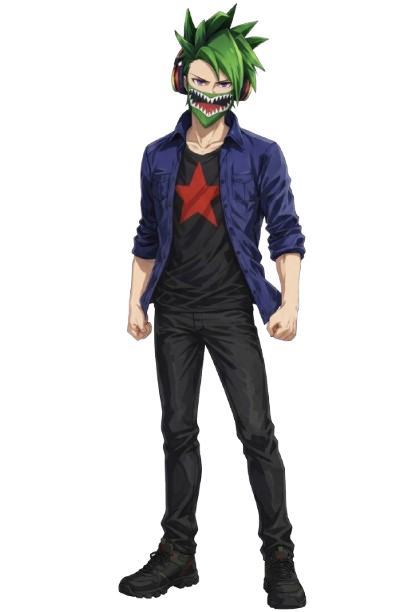
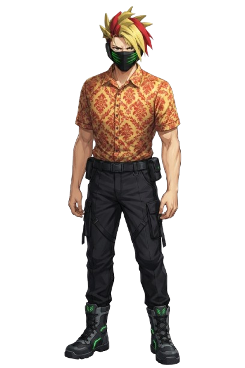

Seron Darkness — The Dark Star
Seron Darkness is the primordial architect of the Black Star Requiem universe. Once human, he witnessed the collapse of his original reality — a cosmic extinction that erased everything he knew. In the final moment before oblivion, Seron merged with a dying Dark Star, ascending into a cosmic entity capable of shaping galaxies, rewriting laws, and forging existence itself.
Now known as The Dark Star, Seron created the Prime Universe — a realm born from grief, willpower, and limitless cosmic force. His presence echoes through every star, every dimension, and every event that unfolds within the Requiem.
Tom Letanio — The Time Stopper Guardian
Tom Letanio is one of the most powerful Guardians in the Prime Universe — a Stand User wielding Indigo Fist, a Stand capable of infinite time stop, and the host of the Blue Phoenix, a celestial rebirth spirit of indigo fire.
Tom is a survivor of the Angelic Purges, a catastrophic cleansing event where angels slaughtered entire populations across multiple star systems. His parents were killed during the Purges, leaving him emotionally scarred and shaping his stoic, controlled personality.
Despite his trauma, Tom chose to stand with Seron and the Guardians, becoming one of their most reliable defenders. His mastery of time manipulation and phoenix‑born regeneration makes him a cornerstone of Guardian operations across Guardia and Zavara.

Marcel Toxin — The Biohazard Doctor
Marcel Toxin was once a brilliant toxin scientist studying volatile mutagenic compounds. A catastrophic lab accident altered his physiology permanently — he lost all sense of physical touch and can no longer breathe clean air without severe internal damage.
Forced to wear a respirator at all times, Marcel adapted by weaponizing his condition. He wields a green energy scythe forged from concentrated toxin‑based aether, capable of slicing through organic and inorganic matter with surgical precision.
Marcel now serves as one of the Guardians’ primary doctors and biochemical specialists. Though his body is damaged, his mind remains sharp — and his loyalty to the Guardians is unwavering.